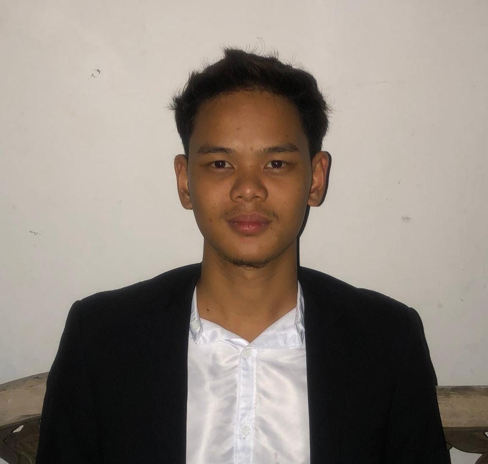

Hey there, I’m Amir. I don't just write code; I craft digital experiences that demand attention. While others stick to safe, repetitive design trends, I build web and software solutions that cut through the noise with raw efficiency, power, and elegance.

Setting benchmarks through structured knowledge and technical precision.
| QUALIFICATION | INSTITUTION | TIMELINE |
|---|---|---|
| Bachelor of Information Technology | University College TATI (UC TATI) | 2024 — PRESENT |
| Foundation in information technology | University College TATI (UC TATI) | 2023 — 2024 |
| Secondary Education | SMK Sultan Mansor | 2018 — 2023 |
| Primary Education | SK Atas tol | 2012 — 2017 |
My goal is to develop useful and user-friendly software applications that improve productivity and simplify daily tasks. I aim to combine effective programming, innovative ideas, and attractive user interface design to create meaningful digital solutions.